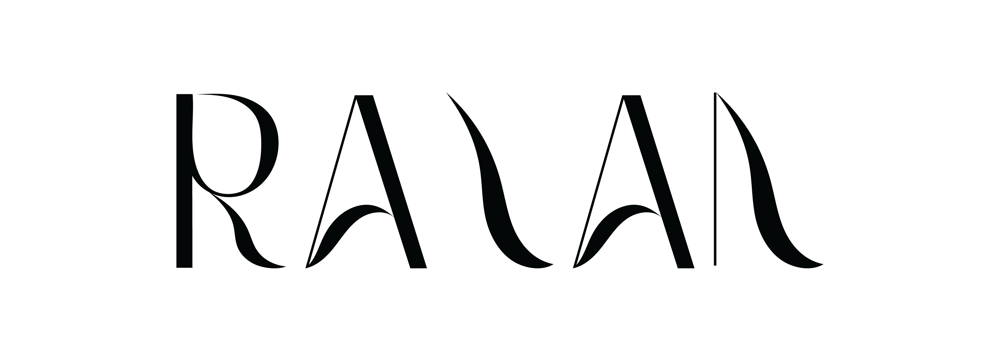

Bachelor of Information Technology
King Abdulaziz University
Expected Graduation: 2027
GPA: 4.98 / 5.00

Information Technology Student
I am an Information Technology student at King Abdulaziz University with a strong interest in creative problem-solving and using technology as a tool for innovation. Passionate about human-centered thinking in designing solutions that address real user needs. Eager to learn, explore new technologies, and contribute creative ideas in a practical training environment.
King Abdulaziz University
Expected Graduation: 2027
GPA: 4.98 / 5.00
Laurentian University, Sudbury, Canada
3-month academic English language program.
UMC Institute, Toronto, Canada
2-month English language course.
Developed a Java-based system enabling staff to manage service orders, update order statuses, send customer notifications, and collect post-service ratings.
Designed a premium, user-centered digital experience for the barbershop service industry.
Passive Vertical Tube System
Designed an innovative passive vertical tube system integrating MOFs for environmental enhancement and resource recovery.
Jeddah Level — AstroTech
Developed an interactive game leveraging NASA data to raise awareness about climate change challenges.
King Abdulaziz University — Regrow
Proposed a creative, AI-enabled sustainable solution focused on transforming food waste into environmental value.
Contributed 1450+ volunteer hours across various community and social initiatives.
Designed logos and visual identities for various organizations, translating client requirements and briefs into effective visual solutions.
Managed visual design, content creation, and social media platforms.
Led volunteer teams, supported administrative operations, and coordinated committee workflows.
Managed content creation, social media marketing, and customer communication.